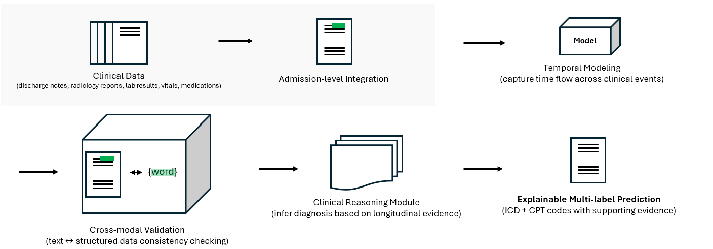

Temporal Clinical Reasoning for Medical Coding
Spring 2026 CSCI 5541 NLP: Class Project - University of Minnesota
Stack OverFlowers

Jisun Kim

Steven Hu
Jisun Kim
Steven Hu
This project focuses on predicting ICD (diagnosis codes) and CPT (procedure codes) from clinical records. Existing methods do not fully utilize temporal information or data from multiple documents. Most models rely on a single document, such as a discharge summary, and fail to capture changes in a patient's condition over time or important signals distributed across different clinical notes.
To address these limitations, we organize clinical data at the admission level and design two baseline models. Baseline 1 is a BioClinicalBERT-based multi-label classification model using a single discharge summary. Baseline 2 extends this approach by combining multiple documents, including discharge and radiology reports, using a Longformer-based architecture to better handle long sequences.
We further propose a temporal modeling approach that processes multiple clinical notes in chronological order. Each note is encoded using BioClinicalBERT, and a sequential LSTM model captures temporal dependencies across notes, enabling joint prediction of ICD and CPT codes within a unified framework.
The proposed temporal model achieves a Micro-F1 score of 0.5343 for ICD prediction and 0.6096 for CPT prediction, with a joint performance score of 0.5720. These results demonstrate that temporal multi-note modeling improves performance compared to single-note baselines while effectively capturing patient progression across sequential clinical notes.

The goal of this project is to automatically predict diagnosis codes (ICD) and procedure codes (CPT) from clinical records to improve the efficiency of healthcare systems.
Most existing automated coding systems use only a single document, such as a discharge summary, as input (Mullenbach et al., 2018; Huang et al., 2022; Yang et al., 2022). However, in real clinical settings, a patient's condition changes over time, and important information is spread across multiple documents, such as radiology reports and other clinical notes.
Because of this, single-document approaches have clear limitations. Therefore, this study aims to address these limitations to reduce the workload of medical staff and improve hospital efficiency.
We propose a temporal clinical reasoning framework that models multiple clinical notes over time to capture the progression of a patient’s condition. Each clinical note is encoded using BioClinicalBERT, and a temporal model based on LSTM is applied to capture dependencies across notes. The model is designed to jointly predict ICD (diagnosis) and CPT (procedure) codes in a unified multi-label framework.
The model integrates multiple types of clinical notes, including radiology, nursing, and discharge summaries, and organizes them at the admission level. By processing notes in chronological order, the framework captures longitudinal patient information that cannot be represented in single-note approaches.
To construct the dataset, we use MIMIC-III and convert raw clinical data into time-ordered sequences. Clinical events are aligned by admission and sorted by charttime to reflect temporal progression. ICD codes are mapped to a consistent label space, and the dataset is split into training, validation, and test sets for evaluation.
In Baseline 1, we built a model that predicts ICD codes from only one discharge summary. We matched notes
and labels using hadm_id and collected 86,146 admissions. The model is based on
BioClinicalBERT (Alsentzer et al., 2019), and we added a dropout layer and a linear classification head
to predict the presence of the top 50 ICD codes. The data were split into Train, Validation, and Test sets
as 60,302 / 12,922 / 12,922. This baseline is simple and stable, but it cannot use the many kinds of
clinical information created during admission.
In Baseline 2, we designed a multi-document model to use more information. For each admission, discharge
and radiology documents were grouped by hadm_id and sorted by charttime. The
documents were then merged into a single long text input. We used a Longformer-based (Beltagy et al., 2020)
multi-label classification model to predict 50 ICD codes. This approach uses more information than a
single-document model and reflects the structure of clinical data. However, in early experiments, it used
a small dataset and simple document merging, so it could not capture temporal relationships.
In our temporal model, we explicitly include temporal reasoning by processing multiple documents in time
order within the same hadm_id. Radiology notes and discharge summaries are sorted by
charttime, and up to five notes are used as one sequence for each admission. Each document is
first encoded with BioClinicalBERT (Alsentzer et al., 2019), and then a single-layer bidirectional LSTM
(Hochreiter and Schmidhuber, 1997) models the patient's state changes across time. Using this structure,
we collected 101,655 admissions and split them into Train / Validation / Test as 71,158 / 15,248 / 15,249.
One challenge is the limited number of clinical notes per admission due to computational constraints. Another challenge is capturing long-range dependencies across notes, which may not be fully handled by LSTM.
We evaluated the models for joint ICD and CPT prediction on the MIMIC dataset. The results demonstrate that temporal multi-note modeling improves performance while capturing sequential dependencies across clinical notes.
| Model | ICD Micro F1 | ICD Macro F1 | CPT Micro F1 | CPT Macro F1 | P@5 (ICD) | P@5 (CPT) | Joint Score |
|---|---|---|---|---|---|---|---|
| Baseline (BioClinicalBERT) |
0.4506 | 0.3130 | 0.5380 | 0.1751 | 0.4315 | 0.4775 | 0.4593 |
| Longformer | 0.5946 | 0.4394 | 0.5904 | 0.3001 | 0.5563 | 0.4963 | 0.5925 |
| Temporal (BERT + LSTM) | 0.5343 | 0.4122 | 0.6096 | 0.3971 | 0.4979 | 0.5010 | 0.5720 |
The temporal model captures sequential dependencies across clinical notes and enables joint prediction of ICD and CPT codes. While the model achieves competitive overall performance, ICD prediction remains more challenging than CPT due to the complexity and variability of diagnostic patterns.
Compared to Longformer-based models, the temporal approach shows slightly lower ICD performance, likely due to information compression through the LSTM structure. However, the model demonstrates competitive performance and a balanced precision–recall trade-off.
Performance on rare ICD codes remains limited due to label imbalance, and long-range dependencies across distant notes are not fully captured by the current sequential architecture.
This work demonstrates that temporal modeling of clinical notes enables joint ICD and CPT prediction by capturing patient condition progression over time. The proposed framework achieves effective and clinically meaningful performance, particularly for CPT prediction.
However, several limitations remain. Performance on rare codes is still limited due to label imbalance. In addition, each admission is represented by a limited number of notes, which may truncate important information in longer hospital stays. Finally, the current LSTM-based model may not fully capture long-range dependencies.
Future work will focus on incorporating structured clinical data, improving rare code prediction through better sampling strategies, and exploring transformer-based temporal models to better capture long-term dependencies.